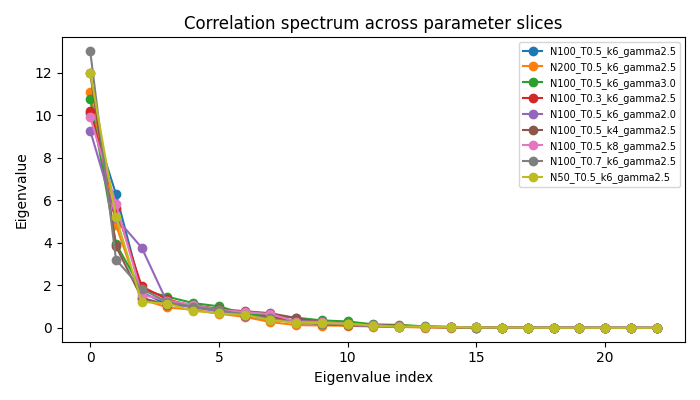

I am an undergraduate student pursuing Bachelor of Technology in Mathematics and Computing from JUIT, Solan, India.
Currently, I am working with mathematical modeling, network science, and machine learning.
I like to play tennis and enjoy reading about the lives of mathematicians.
Interests
Graph theory, complex analysis and machine learning
Publication

Collective Dimensionality in Hyperbolic Network Models
Investigates collective dimensionality in hyperbolic network models through a spectral framework, highlighting structural differences between synthetic and empirical networks. Manuscript in preparation for submission.
Work
Research Intern
UHN, Toronto, Canada · Remote
Dec 2025 - present
Worked as a Research Intern under the supervision of Dr. Arvind Iyer focusing on geometric models of complex networks, with an emphasis on hyperbolic random graph frameworks. Studied the collective structure of synthetic network ensembles by embedding graph realizations into a high-dimensional observable space and analyzing their geometry using spectral methods.
Investigated variance concentration, eigenmode stability, and effective dimensionality of observable correlations, and compared structural behavior between synthetic and empirical networks. Contributed to identifying mathematical conditions under which generative network models better reflect large-scale structural organization observed in real-world systems.
Mathematics Outreach Intern
International Centre of Theoretical Sciences (ICTS-TIFR), Banglore, India
June 2025 - July 2025
Selected for the ICTS Math Circle Initiative, where I delivered mathematics talks at schools and served as a Teaching Assistant under IIT faculty. Led problem-solving sessions, mentored students in proof-based reasoning, and developed rigorous problem sets to encourage abstraction and analytical thinking.